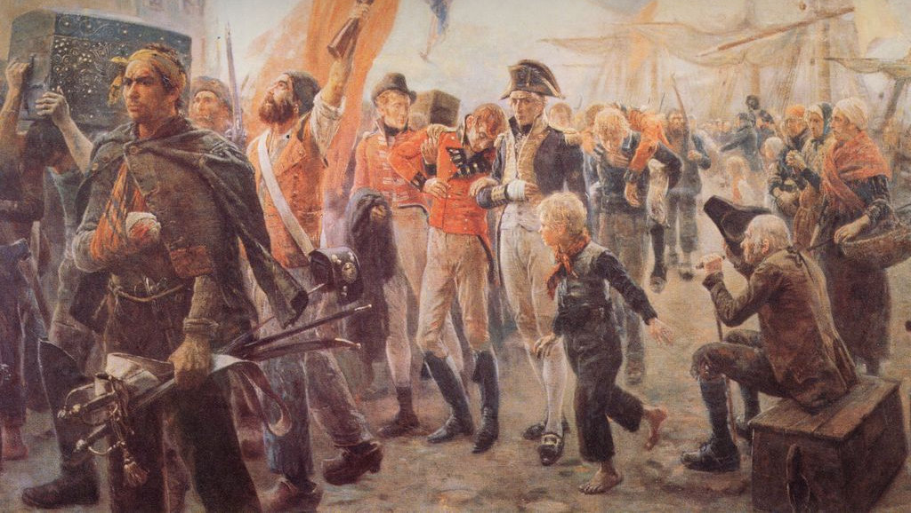

Corsair Uprising
Captain Barrett returns to port with captured Arkandic officers Maurice Orange, Public domain
{kind=link}
The Corsair Uprising was a period of conflict and later war of independence in which Ikara broke from Arkandic colonial rule between 278 and 284.
Background
In mid 278, the Overseas Directorate instituted a tax on all commercial voyages by Ikaran-flagged ships, even within Ikara. Some Corsairs began contracting directly with transitting ships, bypassing the registry system and undercutting government prices. Those who were caught were barred from working for the Maritime Union, and sometimes arrested as traitors.
Allegedly due to lost revenue, the Overseas Directorate shut down the wildlife control service in late 278. Beast attacks, especially near the white forest, because more frequent. Towns in the north formed local militias to combat them and hired blacklisted sailors to transport weapons and other equipment along the Fox River.
Uprising
On 279.1.14, the captain of one of these ships was docked in Southbar. He began bragging about the scale of the militia operations, and an off-duty ACSS officer overheared. A fight broke out, and the captain was wounded. News spread quickly throughout the eastern coast, and several ports began turning away Arkandic government ships in protest.
In response, the Overseas Directorate required the presence of ACSS “guards” on all Ikaran commercial ships. Armed ships not flying the ACSS pennant would be assumed to be pirates. Very few Corsairs complied with this order, leading to skirmishes between them and Arkandic warships. In 279.9, Captain Barrett, the leader of a significant revolutionary fleet, sank the AOD Ruhig and captured its officers as hostages. He brought them to Southbar, by now in open revolt against Arkandic rule.
Arkand declared a state of emergency, outlawed all Ikaran ships operating as Corsairs, and sent Maritime Union warships to clear te Etalameri pass entirely. Fighting escalated into open coastal and inland warfare. The Ikaran militia forces were assisted by Tilian volunteers. Arkand withdrew in 284 in exchange for the release of the officers of the Ruhig.
Aftermath
See: Ikara, federation period.